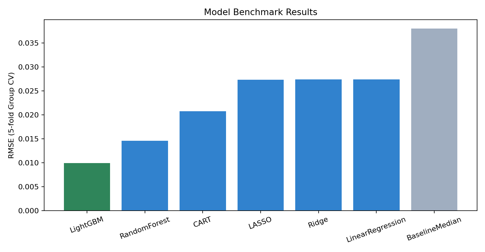
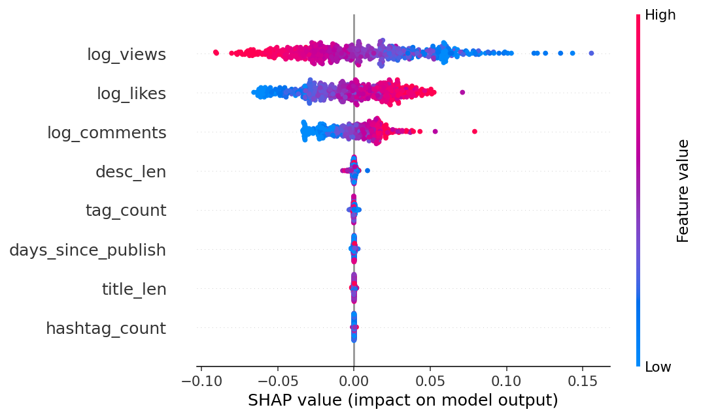
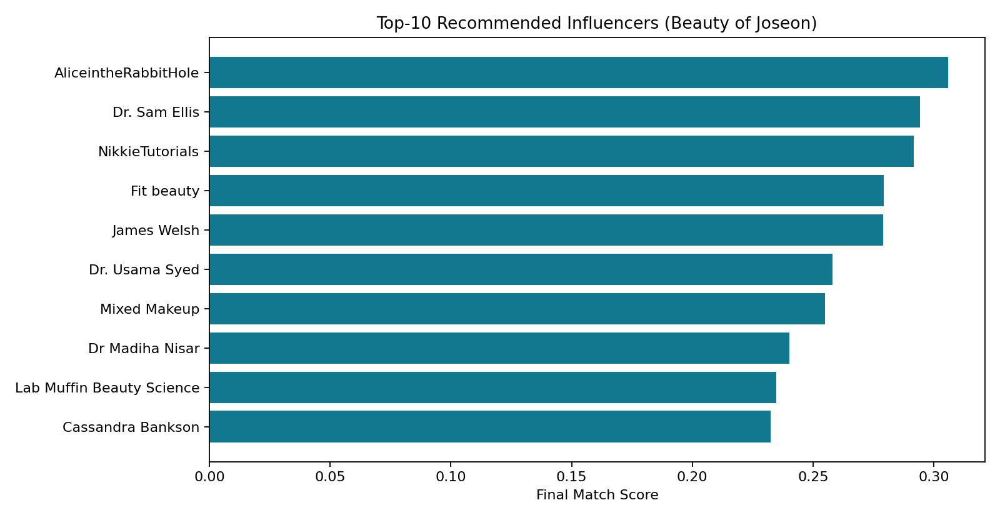
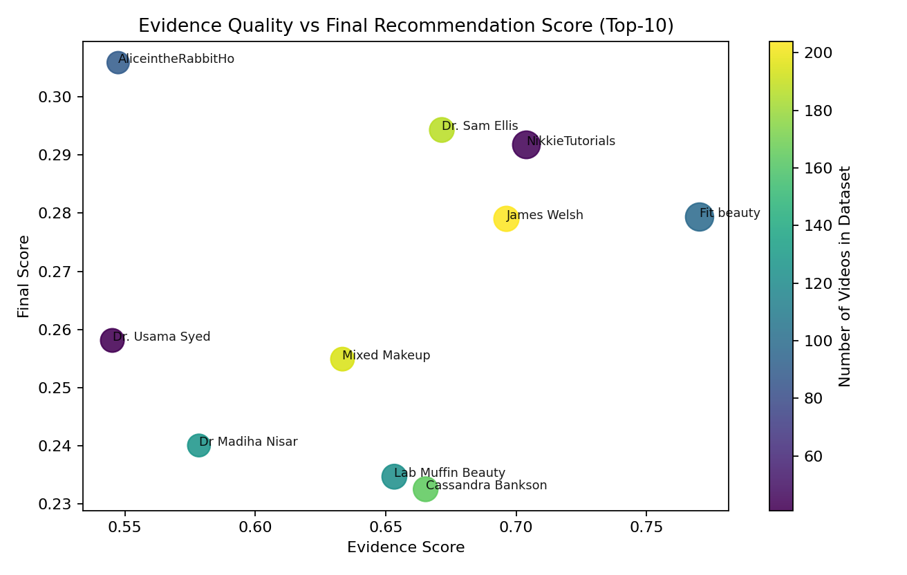
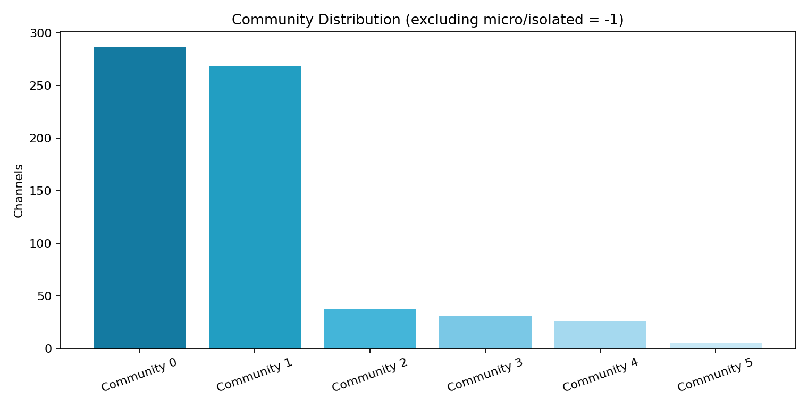
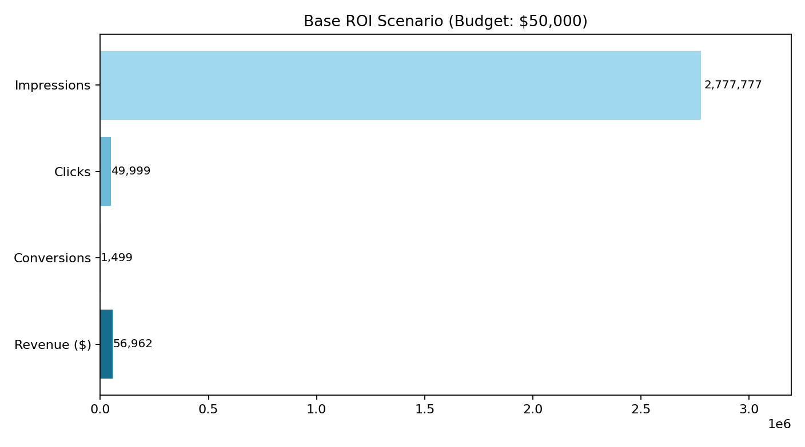

MSIS 521 Course Project | Team Presentation (15 minutes)
Case: Beauty of Joseon (BOJ), U.S. sunscreen campaign prototype
What we built: End-to-end Streamlit app + Python AI pipeline for influencer recommendation, evaluation, and decision support.
| Assignment Requirement | Our Implementation |
|---|---|
| Pick a problem and client | BOJ influencer matching (realistic brand scenario) |
| Collect or obtain data | Team-collected YouTube dataset (videos/channels/comments) |
| Build AI prototype in Python | Streamlit + modular Python pipeline |
| Present process + business story + demo | This deck + live app walkthrough |
Submission format aligned: code + presentation deck (no separate long written report required).
Input files: videos_text_ready_combined.csv, comments_raw_combined.csv, master_prd_slim_combined.csv
Campaign input used: BOJ, SPF + Glow Serum, U.S. market, sensitive-skin audience, $50k budget.



Top 3: AliceintheRabbitHole, Dr. Sam Ellis, NikkieTutorials.

Bias metric: overlap between degree-only top-10 and hybrid top-10 = 2/10.


| Rubric Criterion | Evidence in This Project |
|---|---|
| Topic choice, scope, interest | Clear marketing problem, creative hybrid AI approach, realistic scope |
| Potential impact and relevance | Directly useful for brand/agency influencer decisions and budget planning |
| Technical prototype quality | Working end-to-end app, multi-model benchmark, SHAP, sanity checks, bias diagnostics |
| Presentation storytelling quality | Context → data → method → results → demo → impact flow with visuals |
Suggested speaking split: Speaker A (context), Speaker B (technical), Speaker C (demo + impact).
Thank you. Q&A.